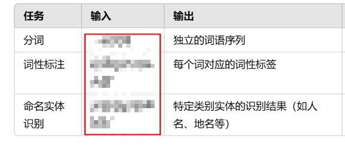
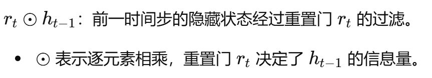
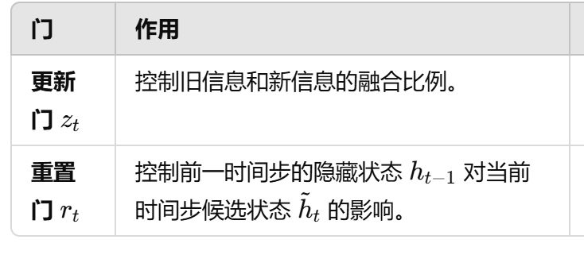
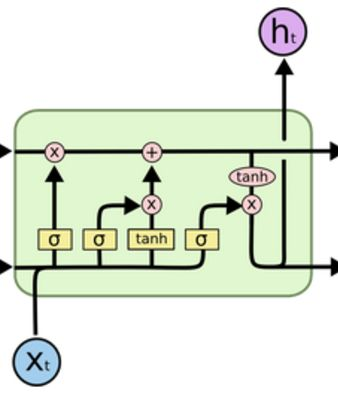
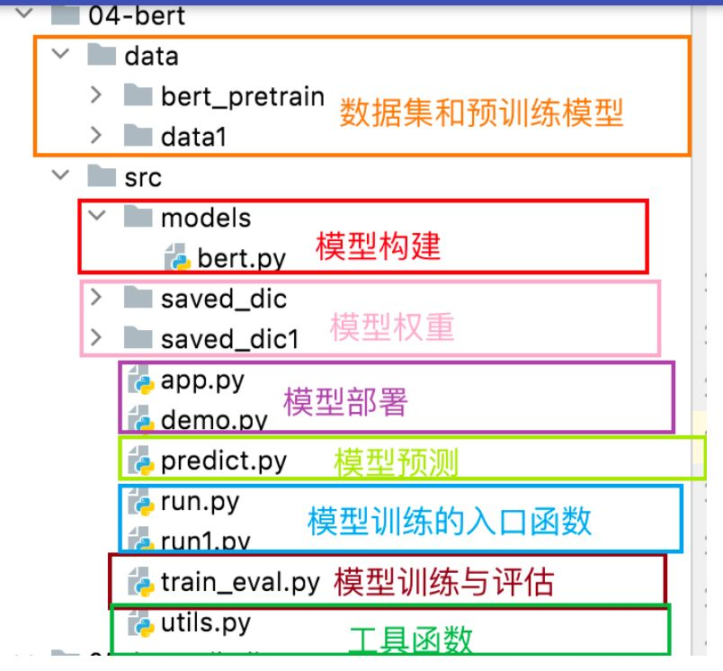

IV的作用 是什么？【这个值越大表示这个特征的什么能力越强。】
对目标变量的区分能力以及预测能力越强。
衡量了整个特征对目标变量的区分能力，IV值越大，特征的预测能力越强。
衡量了整个特征对目标变量的区分能力，IV值越大，特征的预测能力越强。
多分类问题中最常用的评估指标，尤其是在类别分布平衡的情况下，是什么？
准确度（Accuracy）
准确度（Accuracy）计算公式是什么？

词性标注 的英文以及简写是什么？
Part-of-Speech Tagging, POS Tagging
jieba 分词里面的
精确模式、全模式和搜索引擎模式的区别
精确模式、全模式和搜索引擎模式的区别
- 精确模式：输出是唯一的，没有重复词，也不会刻意把一个长词再切分成短词。
- 全模式和搜索引擎模式：都包含重复词。
- 全模式：穷尽句子中的所有词语组合，导致重复率较高。
- 搜索引擎模式：在精确模式基础上增加长词的细分。
分词 的英文是什么？
Tokenization。


在GRU里面，下面公式中间的圈是什么意思？以及整体的功能是什么？


在GRU里面，1 - z_t 和 z_t 分别过滤什么信息？
分别是旧信息，上个隐藏状态
以及新信息，当前候选状态。


以及新信息，当前候选状态。
在GRU里面，
最终的隐藏状态h_t是谁和谁的加权融合？
最终的隐藏状态h_t是谁和谁的加权融合？
新旧信息的加权融合，新信息就是新的候选状态，旧信息就是上一个隐藏状态。

GRU 的完整数据流程包括哪三个关键步骤？
 。
。GRU 里面，



在 LSTM 中，
输出门（output gate）的功能是什么？【决定了哪里的信息传递到哪。】
在 LSTM 中，
输出门（output gate）的功能是什么？【决定了哪里的信息传递到哪。】
输出门（output gate）决定了细胞状态中的信息有多少需要传递给隐藏状态，也就是决定隐藏状态的值。


collate_fn 应返回什么样的数据？【返回的数据的格式以及参数名称。】
返回的格式是具有两个元素的元组，而第一个元素又是一个三个元素的元组。
((batched_x, batched_seq_len, batched_mask), batched_y)
((batched_x, batched_seq_len, batched_mask), batched_y)
- 使用 pathlib 来确保路径存在
- 使用动态生成的时间戳作为模型名称
torch.save(ba_model.state_dict(), './save_model/20230228_new_model_%d.bin' % epoch)
# 生成当前的时间戳
timestamp = datetime.now().strftime('%Y%m%d_%H%M%S')
# 定义保存模型的目录
save_path = Path('./save_model')
save_path.mkdir(parents=True, exist_ok=True)
# 保存模型
torch.save(ba_model.state_dict(), save_path/ f"{timestamp}.bin)
timestamp = datetime.now().strftime('%Y%m%d_%H%M%S')
# 定义保存模型的目录
save_path = Path('./save_model')
save_path.mkdir(parents=True, exist_ok=True)
# 保存模型
torch.save(ba_model.state_dict(), save_path/ f"{timestamp}.bin)
如何在模型中处理 EPO 问题
对于 EPO 问题，可以将关系抽取任务视为多标签多分类问题，使模型能够为同一实体对预测多个关系。
如何在模型中处理 SEO 问题?
对于 SEO 问题，可以为每个实体对设计独立的分类器，或者使用共享层和专用层结合的架构，以区分不同实体对中的关系。
nn.Embedding(..., ...) 初始化一个嵌入矩阵
里面的两个参数名称是什么？
里面的两个参数名称是什么？
(vocab_size, embedding_dim)
在关系抽取中，标签类别tag通常对应于什么？
对应于不同的关系类型。
注意力机制（Attention Mechanism）
【能够动态怎么样？提升模型的什么能力？】作用是使模型能够在处理序列数据时，能够怎么样？
动态地关注输入序列中的不同部分。提升模型对重要信息的捕捉能力，增强上下文理解。
inner_obj_heads 和 inner_obj_tails 的维度是 什么样的？【是二维的，行数和列数分别和什么相等？】
[序列长度, 关系类别数].
inner_obj_heads 和 inner_obj_tails,数据格式是存放0,1 二值的二维矩阵。
每个位置的0,1 表示什么意思？【什么类别下的什么位置？】
每个位置的0,1 表示什么意思？【什么类别下的什么位置？】
特定关系类别下的起止位置。
从输入句子，到Token Embedding，Position Embedding。整体的数据流转过程是什么样？【4个步骤】
1 原始文本序列经过tokenizer处理以后变成id序列。
2 ID序列里面的每个ID经过embedding 层后得到对应的嵌入词向量。
3 每个位置索引经过嵌入以后得到位置向量。
4 词向量和每个对应的位置向量相加以后得到结果。
2 ID序列里面的每个ID经过embedding 层后得到对应的嵌入词向量。
3 每个位置索引经过嵌入以后得到位置向量。
4 词向量和每个对应的位置向量相加以后得到结果。
步骤1：Tokenization
- 输入句子被分割成 tokens，并转换为
input_ids。
步骤2：Token Embedding
- 每个
input_id被转换为一个嵌入向量，形成token_embeddings矩阵。
步骤3：Position Embedding
- 每个 token 的位置索引 形成
position_embeddings矩阵。
步骤4：相加操作
- 将
token_embeddings和position_embeddings相加，得到结合了词汇和位置信息的最终输入表示。
def create_label(inner_triples, inner_input_ids, seq_len):
代码里面，这三个参数分别是什么意思？
代码里面，这三个参数分别是什么意思？
包含SPO三元组的列表。词汇表里面的ID序列。序列的长度。
- inner_triples: 包含多个SPO三元组的列表，每个三元组包含 subject、predicate、object。
- inner_input_ids: 各个token在词汇表里面对应的ID位置序号。
- seq_len: 序列长度。
inner_triples 是一个包含多个SPO三元组的列表，后续用它来构建什么？
遍历 inner_triples 并构建 s2ro_map。
inner_triples 是一个包含多个SPO三元组的列表，首先对其遍历，拿到单个的三元组之后，然后是什么阶段？【是什么阶段以及三元组里面哪些值分别通过什么？转换成什么？】
编码阶段，
- 将 subject 和 object 通过 tokenizer 转换为 input_ids。
- 将predicate 通过字典的映射，转换为对应的关系ID。
处理的流程是什么？【从原始的输入文本到用于训练的标签张量】
- 输入：句子经过tokenizer处理，得到 input_ids。
- 遍历SPO三元组：对每个SPO三元组，找到主体和客体实体在 input_ids 中的起始索引。
- 构建 s2ro_map：s2ro_map 记录了每个主体实体所关联的所有客体实体及其关系类别。
- 填充标签：关于主体的话有四个，sub_head, sub_tail, sub_head2tail, sub_len，关于客体的话有两个obj_head, obj_tail。
- 输出：返回用于训练的多个标签张量，涵盖主体实体的位置、跨度、长度，以及客体实体的位置和关系类别。
假设我们有以下句子和SPO三元组，经过tokenizer处理后的 input_ids 和位置索引应该是什么样的？
句子: "Alice works at OpenAI and studies at MIT."
SPO三元组:
1. {'subject': 'Alice', 'predicate': 'works_at', 'object': 'OpenAI'}
2. {'subject': 'Alice', 'predicate': 'studies_at', 'object': 'MIT'}
SPO三元组:
1. {'subject': 'Alice', 'predicate': 'works_at', 'object': 'OpenAI'}
2. {'subject': 'Alice', 'predicate': 'studies_at', 'object': 'MIT'}
input_ids = [101, 1001, 2003, 2000, 2001, 2004, 2005, 2006, 2007, 102]
# 对应的tokens: ["[CLS]", "Alice", "works", "at", "OpenAI", "and", "studies", "at", "MIT", "[SEP]"]
# 位置索引: [0, 1, 2, 3, 4, 5, 6, 7, 8, 9]
# 对应的tokens: ["[CLS]", "Alice", "works", "at", "OpenAI", "and", "studies", "at", "MIT", "[SEP]"]
# 位置索引: [0, 1, 2, 3, 4, 5, 6, 7, 8, 9]
使用inner_sub_head2tail 0,1 二值的一维张量，来标记主体实体的跨度。【代码】
inner_sub_head2tail[sub_head_idx: sub_tail_idx + 1] = 1
EPO 问题为什么被视为多标签多分类任务，使用什么激活函数以及损失函数？以及为什么？
Entity pair overlap意味着同一实体对之间存在多个关系标签。也就是对于单个实体对而言，他属于是多标签，多分类。
sigmoid + BCE loss。
多标签多分类任务通常会被视为2分类任务，所以的话它对应的是sigmoid和2元交叉熵损失。
sigmoid + BCE loss。
多标签多分类任务通常会被视为2分类任务，所以的话它对应的是sigmoid和2元交叉熵损失。
[json.loads(line) for line in open(data_path, encoding='utf-8')]
这个写法，虽然技术上可行，但不推荐，这是为什么呢？
因为缺乏资源管理，可能导致文件未关闭的问题。
heads = torch.arange(0, len(pred_sub_heads), device='cpu')[pred_sub_heads == 1]
代码执行的两个阶段是什么？
代码执行的两个阶段是什么？
- 生成位置索引 [0, 1, 2, 3, 4, 5, 6, 7, 8, 9]，
- pred_sub_heads == 1 得到布尔张量来 筛选出 的位置索引，得到 heads 。
extract_sub 这个函数输出的变量的名称是什么以及他的格式是什么？
subs，
类似于[(0, 8), (6, 9)]，包含多个二元元组的列表。
类似于[(0, 8), (6, 9)]，包含多个二元元组的列表。
BERT 模型 主要输出参数是pooler_output ，通常是 哪个token的向量经过哪两个步骤之后的结果，用作表示什么？
[CLS] token 的向量，一个全连接层和 Tanh 激活函数后，用于句子级别的表示（即句向量）。
BERT 模型 主要输出参数是last_hidden_state，包含什么信息？
每个token的词向量。
每个 token 的上下文相关向量表示（即词向量）。
每个 token 的上下文相关向量表示（即词向量）。
Tokenizer 的输出结果输入到模型之后，来到bert模型里面的Transformer编码器，处理什么数据，生成什么数据。
处理输入嵌入，生成隐藏状态（hidden states）。
联合抽取方法分类为哪两种？
- 参数共享的联合模型，级联的方式
- 联合解码的联合模型。
相比于管道模型，联合模型的核心在于哪两个方面？
任务间的参数共享和使用一个共同的总的损失函数。